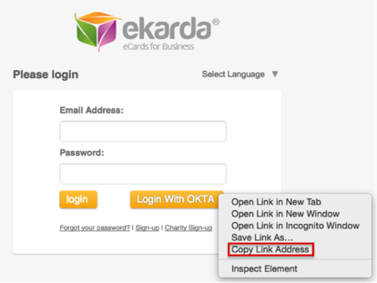
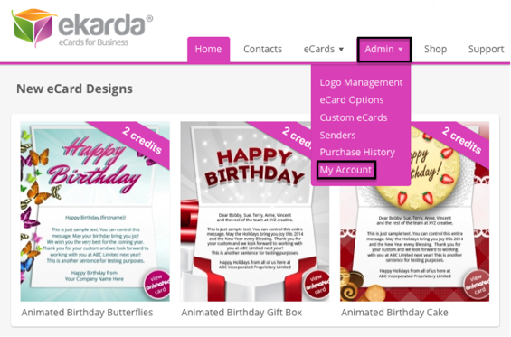
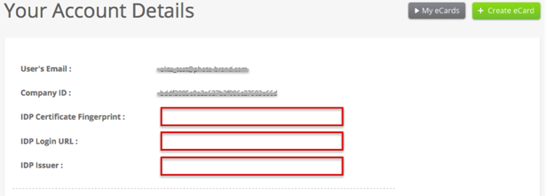
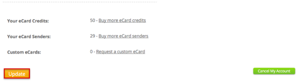
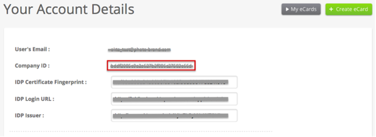
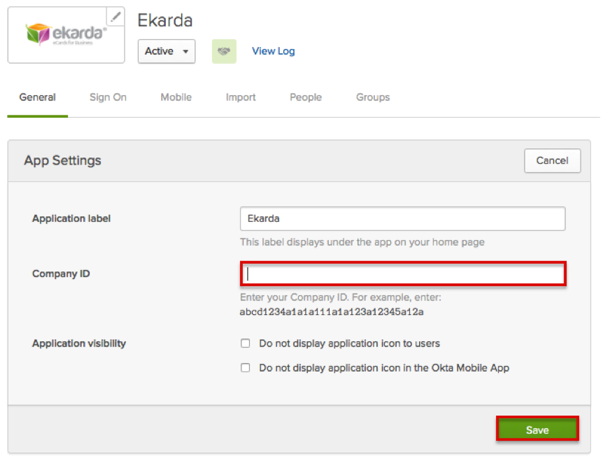
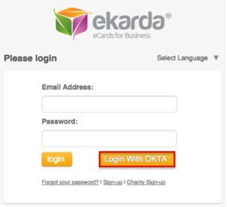

Ekarda supports SP-initiated SAML flows. We recommend that you hide the Ekarda app and set up a Bookmark app with the Ekarda logo after you complete this SAML setup. For instructions on setting up a Bookmark app and hiding the original app, see Simulating an IDP-initiated Flow with the Bookmark App
Use the link for the Login With OKTA button for the Bookmark App URL - see the instructions for SP-intiated flows at the end of this document.

Login to Ekarda as an administrator.
Navigate to Admin > My Account.

Enter the following (see screen shot at end of step for reference):
IDP Certificate Fingerprint: Enter the following:
Sign into the Okta Admin Dashboard to generate this variable.IDP Login URL: Enter the following:
Sign into the Okta Admin Dashboard to generate this variable.IDP Issuer: Enter the following:
Sign into the Okta Admin Dashboard to generate this variable.
Click the Update button at the bottom of the page.

Under Your Account Details, make a copy of the value for Company ID:

In Okta, select the General tab for the Ekarda app.
Click Edit to make the fields editable.
For Company ID, enter the Company ID value you copied in the previous step.
Click Save.

Done!
Notes:
SP-initiated flows and Just In Time (JIT) provisioning are supported.
IdP-initiated flows are not supported.
For SP initiated flows:
Go to the https://my.ekarda.com/users/login/[YourCompanyID] page.
Click the Login With OKTA button.
